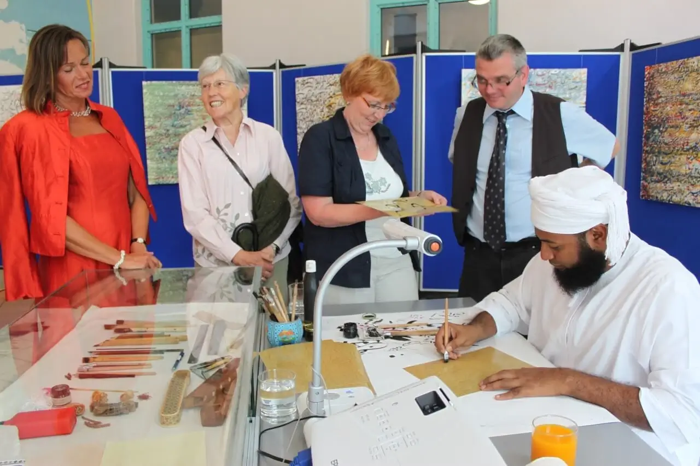
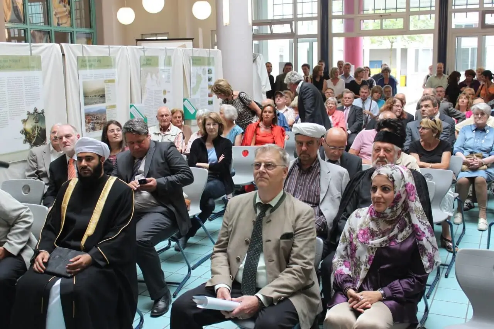
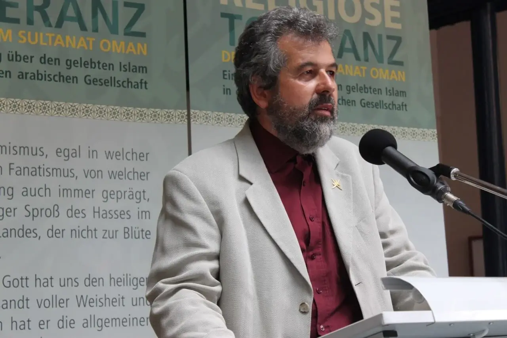
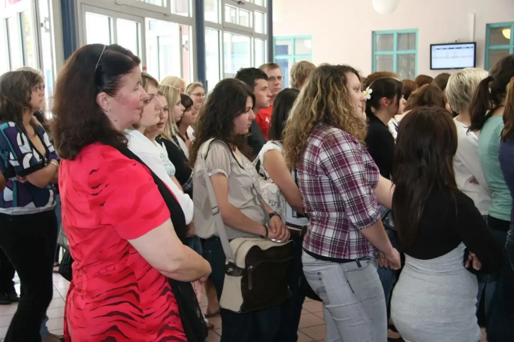
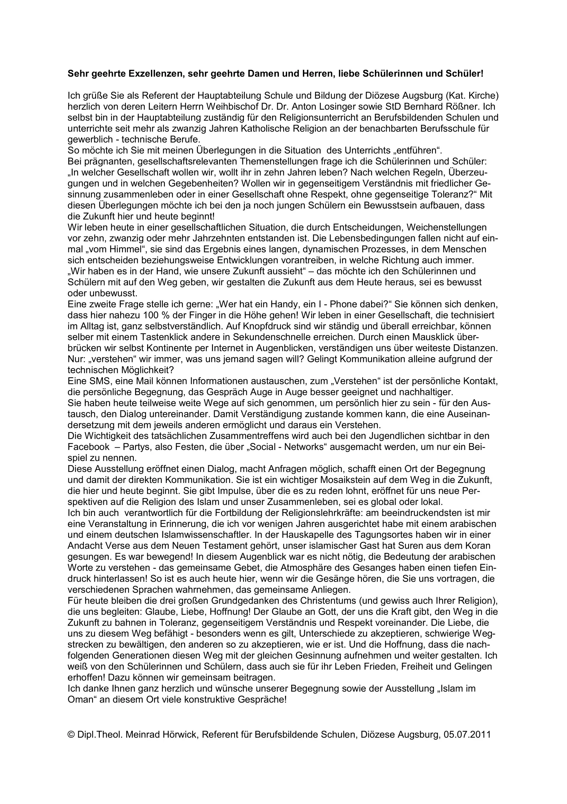
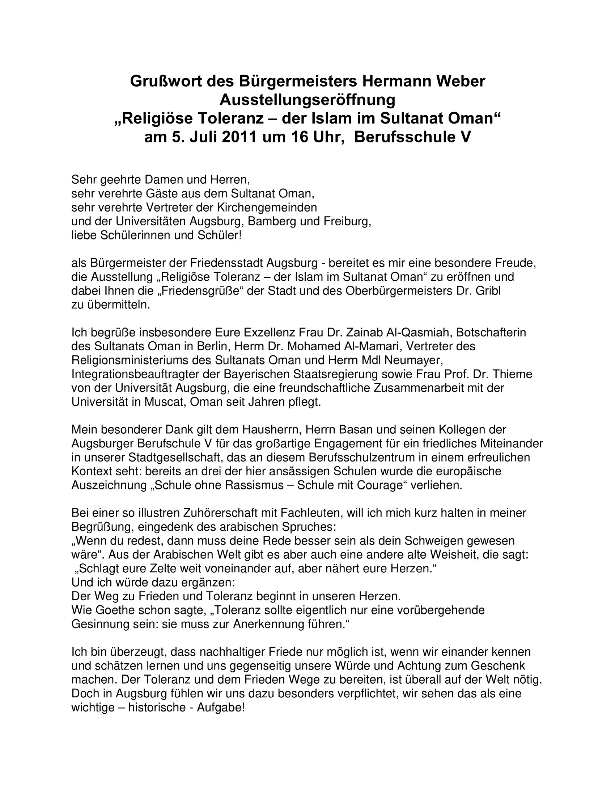
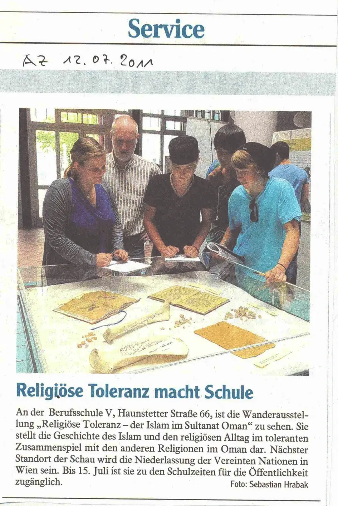

المدرسة المهنية، أوجسبورج، ألمانيا 2011

4 يوليو 2011 حتى 20 يوليو 2011
أوجسبورج هي واحدة من أقدم المدن في ألمانيا، تأسست في العصر الروماني منذ أكثر من 2000 عام.
وتشتهر المدينة بـ "سلام أوجسبورج"، الذي حسم المظالم بين الفصائل الدينية في القرن السادس عشر، وأرسى التسامح الديني في أوروبا بموجب القانون لأول مرة.
استفادت المدرسة المهنية بمدينة أوجسبورج في ألمانيا، من الفرصة التي أتاحها المعرض المتجول "التسامح الديني: رسالة السلام من عمان"، ودمجه في مناهج فصول الدين غير الطائفية. تم تقسيم المعلومات إلى ثلاث وحدات تعليمية لتزويد معلمي الدين بمساعدات تعليمية لإيجاد التشابهات بين المسيحية والإسلام.
|  |
|---|
تبنت سبع مدارس مهنية أخرى في أوجسبورج هذه الفكرة وزار المعرض فصولها، مما أدى إلى منح أكثر من عشرة آلاف طالب مهني تتراوح أعمارهم بين اليعة عشر والثلاث والعشرون عامًا، فرصة للتعرف على الإسلام والعلاقة مع المسيحية.
في افتتاح المعرض، بدأ رئيس بلدية أوجسبورج السيد هيرمان ويبر حديثه بقوله باللغة العربية:
"نصب خيامك بعيدًا، لكن اجعل قلبك قريبًا. بمعنى أنه من المهم التعرف على وتقدير بعضنا البعض بكرامة واحترام. بالنسبة لأوجسبورج، "مدينة السلام"، هذا التزام خاص وتاريخي."
كما أكدت سفيرة عمان في ألمانيا الدكتورة زينب القاسمية في كلمتها، على أهمية التسامح الديني للعلاقات بين الدول ولسلطنة عمان.
وشارك أيضًا في الافتتاح السيد مارتن نيوميير مفوض الاندماج في ولاية بافاريا، والدكتور نيكولاس هويك والسيد مينراد هورويك، ممثلا الكنائس الإنجيلية والكاثوليكية.
|  |  |
وشرح الدكتور محمد المعمري، ممثل وزارة الشؤون الدينية العمانية أهداف الوزارة، كما فصل السيد جورج بوب من الجمعية الألمانية العمانية، التي نظمت هذا المعرض، كيف نشأ هذا المشروع.
ومن المساهمات الأخرى في إنجاح حفل الافتتاح، كان المنشد الديني العماني أنور العاصمي، الذي أبهج الجمهور بأناشيده الرنانة، التي تناولت حب الوطن والأمة والنبي محمد صلى الله عليه وسلم.
كما انبهر الزوار بمهارة الخطاط العماني صالح الشقيري في كتابة أسماء الضيوف بالخط العربي الجميل.

اقرأ كلمة السيد مينراد هورفيك ممثل الكنيسة الكاثوليكية (بالألمانية) »

اقرأ خطاب عمدة اوجسبورج السيد هيرمان ويبر (بالألمانية) »

اقرأ هذا المقال من جريدة ألجمينه تسايتونج حول هذا المعرض (بالألمانية) »
تفضلوا بزيارة معرض التسامح العالمي الافتراضي بلغتكم المفضلة